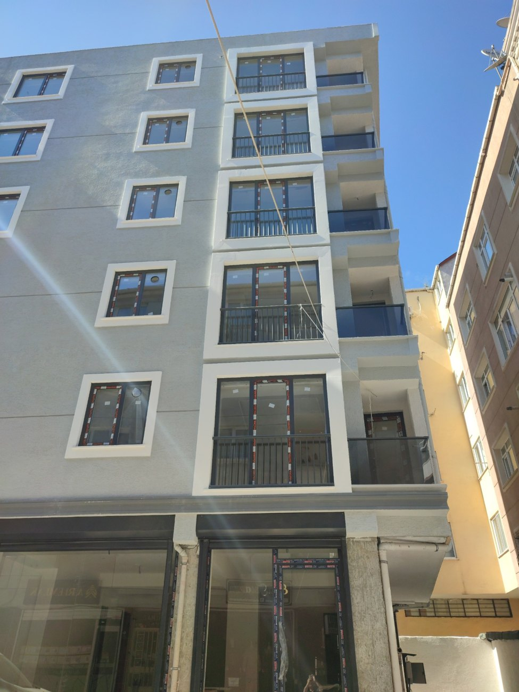

32 yıllık sektör tecrübesi, güçlü teknik kadro ve şeffaf iş modeli.
Masfey İnşaat; kentsel dönüşüm, kat karşılığı inşaat, site ve blok projeleri, mühendislik ve mimarlık alanlarında hizmet verir. Lavinay İnşaat ve Kardelen İnşaat iştirakleriyle proje geliştirme ve uygulama süreçlerini yönetir.

Faaliyet belgesi, ticaret sicil gazetesi ve yapı denetim belgesi bu alana özellikle eklenmedi. Sadece Fetsan tarzı ana kurumsal doküman mantığı kullanıldı.